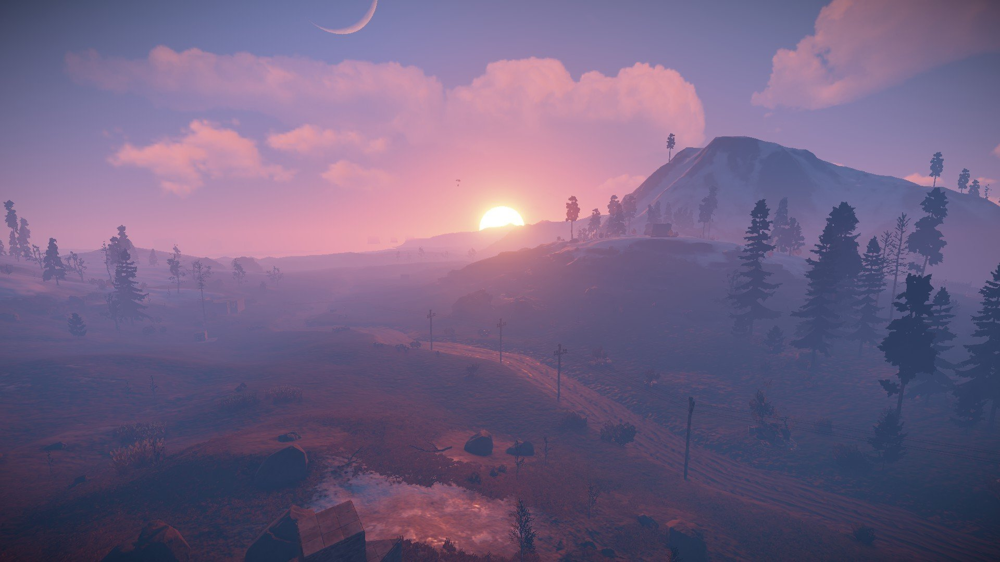

Интернет-зависимости
Какие они бывают:
- Навязчивый веб-серфинг – бесконечные путешествия по Всемирной паутине, поиск информации.
- Пристрастие к виртуальному общению и виртуальным знакомствам – большие объемы переписки, постоянное участие в чатах, веб-форумах, избыточность знакомых и друзей в Сети.
- Игровая зависимость – навязчивое увлечение компьютерными играми по сети.
- Навязчивая финансовая потребность – игра по сети в азартные игры, ненужные покупки в интернет-магазинах (ониомания) или постоянные участия в интернет-аукционах
- Пристрастие к просмотру фильмов через Интернет.
